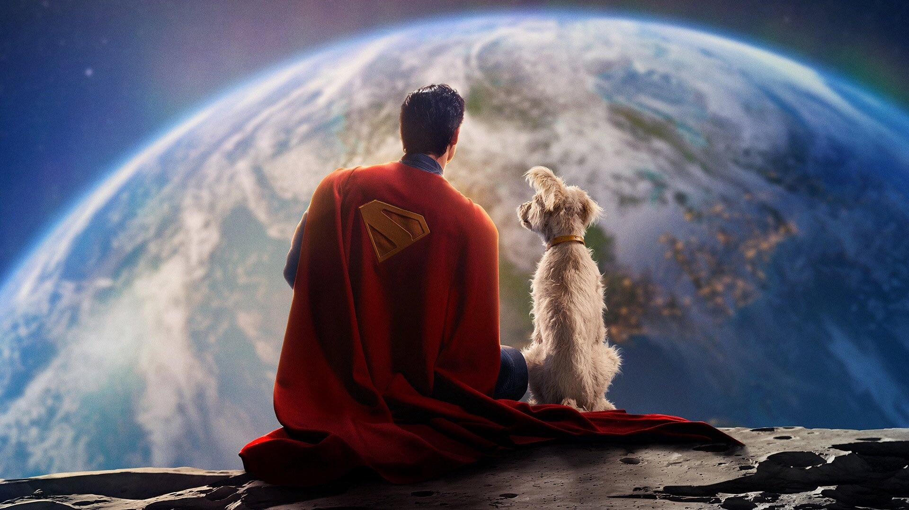

Superman (2025)
Sinopse
Em "Superman (2025)", o icônico herói retorna para enfrentar novas ameaças globais em um mundo moderno. Clark Kent deve equilibrar sua vida dupla enquanto protege a humanidade com seus poderes renovados e enfrenta inimigos poderosos, trazendo uma narrativa atualizada e emocionante.
Elenco Principal
- David Corenswet como Clark Kent / Superman
- Rachel Brosnahan como Lois Lane
- Nicholas Hoult como Lex Luthor
- Diretor: James Gunn
Informações Técnicas
- Gênero: Ação, Aventura, Fantasia
- Duração: 129 minutos
- Data de lançamento: 10 de Agosto de 2025
- Classificação Indicativa: 12 anos
Recepção da Crítica
O filme Superman (2025), dirigido por James Gunn, marca o reinício do universo cinematográfico da DC. No Rotten Tomatoes, o filme estreou com aprovação de 83% por parte da crítica e 91% pelo público.
Destaques e Temas
- Direção criativa: James Gunn, conhecido por Guardiões da Galáxia e O Esquadrão Suicida, busca equilibrar leveza e profundidade no personagem.
- Clark Kent em início de carreira: O filme apresenta Superman lidando com sua identidade e com a responsabilidade de ser um herói em um mundo que ainda não confia nele.
- Elenco renovado: David Corenswet interpreta Clark Kent / Superman, ao lado de Rachel Brosnahan como Lois Lane.
- Tom clássico e atual: A narrativa promete homenagear os elementos clássicos do herói, com uma abordagem moderna e mais humana.
Expectativas Futuras
Superman (2025) é o primeiro filme do novo universo da DC sob a liderança de Gunn e Peter Safran. Ele é parte do capítulo inicial chamado "Deuses e Monstros", que deve incluir outras obras como The Authority, Supergirl: Woman of Tomorrow e Batman: The Brave and the Bold. A produção pretende redefinir o herói para as novas gerações e estabelecer conexões mais sólidas entre os filmes do estúdio.